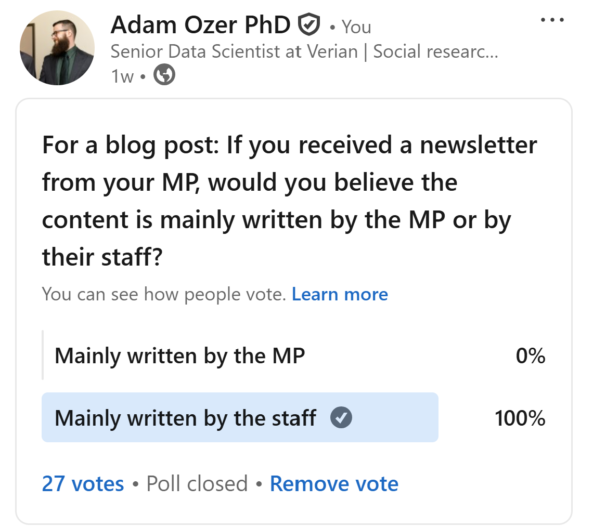

A Reporting Back Mechanism: A Chat with Former MEP Richard Corbett About E-Newsletters and Constituent Communications
“Yeah, you’ve elected me, this is what I’ve been doing. These are the positions I’ve taken. It’s the sort of visibility thing.”
Disclaimer: Any statements or opinions expressed in this blog are shared in a personal capacity. They do not reflect the official stances or policies of Verian.
Click here to access The UK MP Inbox e-newsletter database
Since launching the The UK MP Inbox, I have had a few colleagues ask me if I had plans to reach out to any legislators and ask them about their experiences communicating with constituents through email newsletters. While the thought had crossed my mind, I would be lying if I claimed I was well and truly planning on trying to contact a legislator to pester them with questions for this little project.
However, I did not anticipate that a former legislator would reach out to me. A few weeks ago, when I received an email from Richard Corbett, former Member of European Parliament (Yorkshire and the Humber) and Leader of the European Parliamentary Labour Party (EPLP). He had reached out to let me know that he had read my original blog post1 and shared with me some of his constituency newsletters from his time in office. He was also kind enough to agree to sit down for a chat and answer some of my questions about fostering healthy communication with constituents and the process of producing e-newsletters. While I am certainly no formally trained journalist, I want to try to share some of the interesting excerpts and insights from our chat.
So, how do newsletters fit into politicians’ overall communication strategy? How do politicians determine the content to include and what issues to discuss? Do politicians really write their own newsletters or do they just have their staffers write them for them? Why don’t more MPs have newsletters? What does the future of newsletters, and other long form informational content, look like in a world that is increasingly dominated by short form content? MEP Richard Corbett lends us his perspective from the other side of the email inbox.
Balancing content and encouraging engagement
As someone who has read way too many e-newsletters, I had imagined that MPs must struggle to determine what issues or events to cover in a newsletter. I was quite keen to hear about various strategies for juggling multiple issues. While there are so many topics to cover, space in a newsletter is very limited. Also, there are only so many newsletters one can send before recipients start to view it as spam. However, Mr. Corbett described the process as far more organic and contextual than strategic. While a good deal of thought clearly went into what content to cover, the main priority was clarity and relevance to the reader. Moreover, in his position as MEP, he was typically a bit reluctant to step on the toes of his colleagues in UK parliament.
AO: “How do you balance the content of those newsletters? Issues, events, calls to action, all the things that go into it?”
RC: “I guess that would fluctuate according to events over time, particularly because it was a quarterly report. So for that particular quarter, what had been the big issues? What had I been doing? Of course, in a report, you want it to be readable and reasonably varied. So you try and get a balance of different things that would be of interest to people. Some things are of interest to some people, other things of interest to other people. So you try and have a variety of things in there. But it’s mostly governed by what you’ve been doing in that period.”
AO: “Given that there’s so much going on constantly, and especially in your position [as an MEP] where there are local, national issues, and international issues, how do you balance which issues you choose generally?”
RC: “It depends what’s been happening, what’s been in the news, and what I’ve been doing. But I would probably give a greater emphasis to European level issues because that was my role. I was a member of the European Parliament, so I would not get too stuck into Westminster controversies. I can leave that to my Westminster colleagues, but I would be focused on what was happening at European level.”
In addition to varied content, Mr. Corbett also emphasised the need to encourage feedback from constituents. An underlying goal was to funnel readers from the newsletter to his contact information, allowing them to get in touch. This would allow him to get a better assessment of public concerns, generate opportunities for more direct communication, and offer hands-on help to constituents in need.
RC: “The newsletters generated feedback. Of course, how to contact me was he was on the newsletter. [They contacted me] normally be by e-mail, or sometimes by telephone, wanting to come and see me. But e-mail would be the most common. They were usually either writing to agree or disagree with something, or to ask for further information, or to get help with queries, or to send invitations to come and speak to them, to different groups and whatever.”
AO: “Any particular stories stand out?”
RC: “Oh, gosh, that’s so long ago now. It clearly follows what was in the news to a degree. The subjects that attracted a lot of attention were things like the euro: when it went into a difficult period and the whole debate on whether Britain should join the euro. Sometimes people contact you about things that are European, but not in the sense of what the European Union has done. You get constituents writing to you saying ‘I had a car crash in Italy last summer. There’s a problem with the insurance that’s not been sorted out. Can you help? What do I do? Who do I contact in Italy?’ Or ‘I worked in Denmark for three years. My Social Security contributions that I paid there was supposed to be refunded into the UK system. There’s a hold up in the Danish ministry. Can you help me?’ And often you could help, with your contacts and your colleagues from those countries in the European Union. So emails and messages from constituents are not always generated by [the content of the newsletter]. But it’s a way of saying, ‘hey, I’m here’. So maybe on a completely different subject, you get people writing to you on major political issues or on personal issues like that.”
Yes, the words are actually his own
Mr. Corbett assured me that the vast majority of words in each of his newsletters were authentically his. He chose the topics and either wrote or dictated the newsletters himself. To be fair, there were smaller tasks and little flairs that would require help from his staff. Most of these are things one would likely forgive a legislator for delegating to a tech savvy staffer, This included formatting emails, programming his website, or compiling lists of relevant external resources.2 Still, he would thoroughly review any material before it was published. Ultimately, he took no shortcuts. If it had his name on it, he had a direct hand in creating it.
AO: “When it comes to actually writing the newsletters, how much of it was your own personal input versus a staffer’s?
RC: “For the content, it was largely me. I used to have a little dictaphone and I would dictate while I’m travelling or whatever, and it would be then typed up. I may ask one of my staff to produce a draft with all the formatting and photos, put it up [on the website], send it out [via email].
AO: “Are there any personal flares that you generally add to the messaging to get through to your audience that it is you?”
RC: “I hope that it was clear from the way it read that it’s genuinely from me.”
Of course, this is just a sample size of one, other politicians may not be so hands on with their messaging. But Mr. Corbett was appalled by the idea of any politician delegating their own words to a staffer. While he gave a brief wry chuckle at the idea of using an AI chatbot, he highlighted that careful word choices matter quite a bit in politics. It is not only a matter of authenticity and accessibility, but also a simple matter of pragmatism and risk.
AO: “I might be putting words in some people’s mouths, but I think many people would be surprised to hear that most of the words in the newsletters are actually your own and not just some random staffer. Do you think most politicians use thier own words rather than delegate [newsletter writing] to a staffer?
RC: “Well, they should, because politicians need to be very careful about which words they choose. I mean the wrong word here or there can land you in a lot of political difficulty if you’re not careful. You’re trying to express your own views after all, and communicate it to a lot of people. It should be your own - your own views, I mean. I’m not saying there aren’t parts [that staffers help with]. Like at the back of each constituency report, I put a list of all the meetings I’ve been to and places I’ve been, just as a reporting thing. I got a member of my staff to do that. But then I would read it over, of course, to check that there were no mistakes.”
AO: “I think a lot of people might just assume that any political messages put out by a politician’s office are written by either a staffer or artificial intelligence.”
RC: “Any elected representative who doesn’t at least check it over very carefully and adjust the wording is being silly… But yeah, I guess nowadays I could get AI to write it.”
As a brief aside, after our chat, I was left wondering whether or not my gut feeling was correct. Do people generally assume that legislators do not write their own newsletter? To test this, I employed only the most rigorous scientific methodology: I put up a quick poll on social media. My massive sample of 27 social research and data science nerds is, of course, incredibly robust and unimpeachably perfect in its representativeness and generalisability. Jokes aside, it became pretty clear that folks were generally as cynical as I had anticipated.

Unfortunately, I did not have the foresight to run my brilliant scientific study prior to my chat with Mr. Corbett. Nonetheless, I did manage to ask him about public cynicism and if he believed he can convince his constituents that it’s really him writing the newsletter. He felt that his personal voice came through in his writing, and he hoped that would be enough to indicate to readers that it was genuinely him. But at the end of the day, even if readers incorrectly assume a staffer wrote it, so long as his constituents found the content useful and informative, he would be able to take satisfaction in knowing he did his job.
AO: Do you feel that there are ways to try to cut through that potential for cynicism amongst the public? Or is it simply a matter of just speaking your truth and hoping it finds home?
RC: “I think we live in an age of cynicism, I suppose. But you can do things right and clearly. It’s more about what the content is. Is it saying something useful? Interesting? Explanatory? Informative? Then people focus more on what it says rather than ‘I wonder if he got his assistant to draft this for him’ or ‘did he write it directly himself’. They should, in any case, know that the final product is me, because if you ask somebody to write something, you’ve got to damn well check it and adjust it.”
The most pressing intellectual questions of our time
Finally, after a fascinating and informative conversation, I felt it was only right to conclude with heated intellectual debate on a hot button culture war topic. ` ::: {.blockquote}
AO: “My final question. I couldn’t pass up the opportunity to ask you a really silly one. If you have two lasagnas and you stack one on top of the other, do you have two lasagnas or one giant lasagna?”
RC: “It’s a question of definition, isn’t it? But it depends if they’re identical in their contents. Lasagnas can vary and different recipes. If you’ve put 2 different recipes, one on top of the other, I think you could probably still distinguish them and say these are two different lasagnas. If it’s the same recipe and you just put one on top of the other. You can call it one lasagna.
AO: “Interesting, so a debate about a quality, not quantity?
RC: “Yes.”
:::
Is the debate now settled? I will leave that up to the reader to decide.
Acknowledgments
Preview image by Michael D Beckwith on Unsplash.
Footnotes
Which frankly baffles me. I can’t even get my parents to read the damn thing.↩︎
Come to think of it, maybe I should have offered to teach him how to use Quarto and GitHub to launch his own blog? Cut out his IT staffer entirely and do all the programming himself? Richard, if you are reading this footnote and want to waste time learning to become an unimpressively competent R user like me, shoot me an email.↩︎
Of course, that did not stop my old academic buzzkill instincts from kicking in and prodding at a totally sensible hypothesis.↩︎